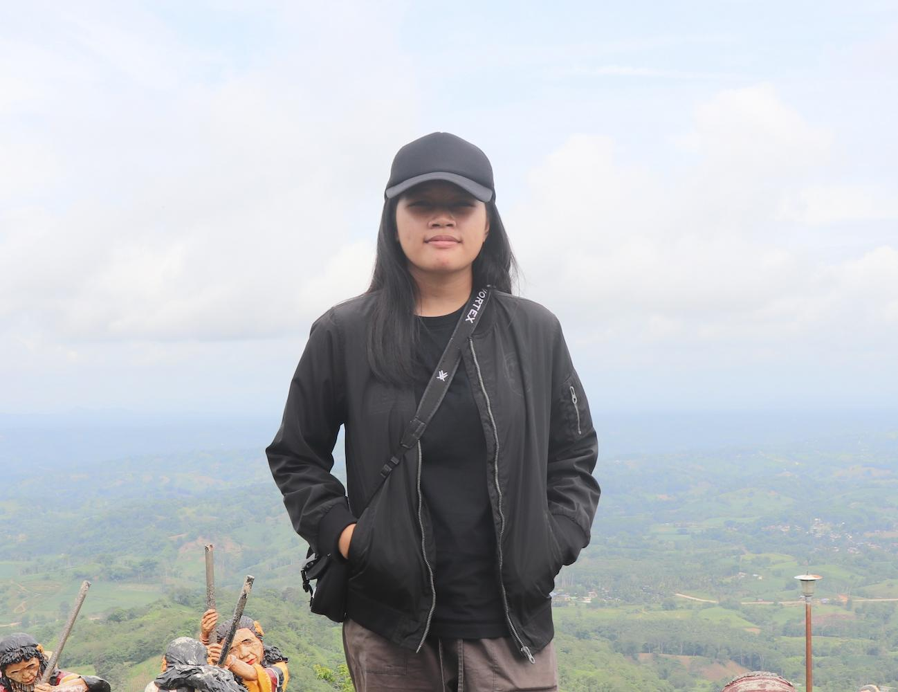

Haezell Jamaikah Abdul | WDD 130

What's up? My name is Haezell Jamaikah Abdul. I'm from the Philippines. I'm currently pursuing Web & Computer Programming certificate. I'm a shy and an introverted type of person. I like to read fictional stories, run (when I'm bored), and play sports. Before, I really liked playing basketball, and it's the first sport that I learned. But right now, life has gotten to me, and I haven't been able to play. I am interested in these kinds of things, like coding and stuff, which is why I enrolled in this course. So far, I have enjoyed learning and would love to learn more about coding and programming.